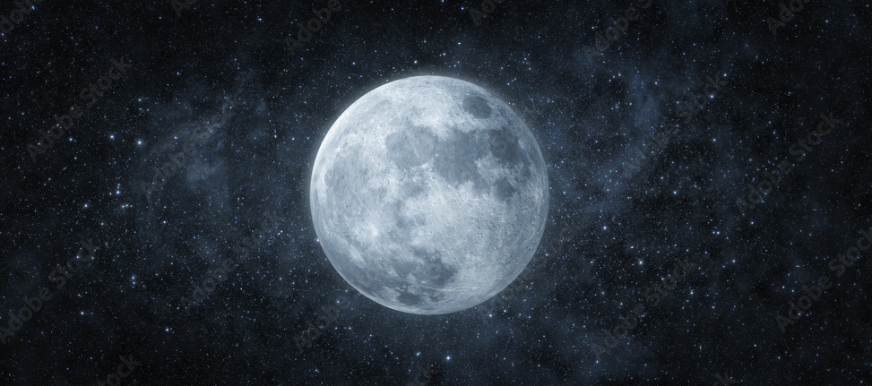

La Luna es el único satélite natural de la Tierra. Es el quinto satélite más grande del sistema solar, mientras que en cuanto al tamaño proporcional respecto a su planeta es el satélite más grande: un cuarto del diámetro de la Tierra y 1/81 de su masa. Es, además, después de Ío, el segundo satélite más denso.